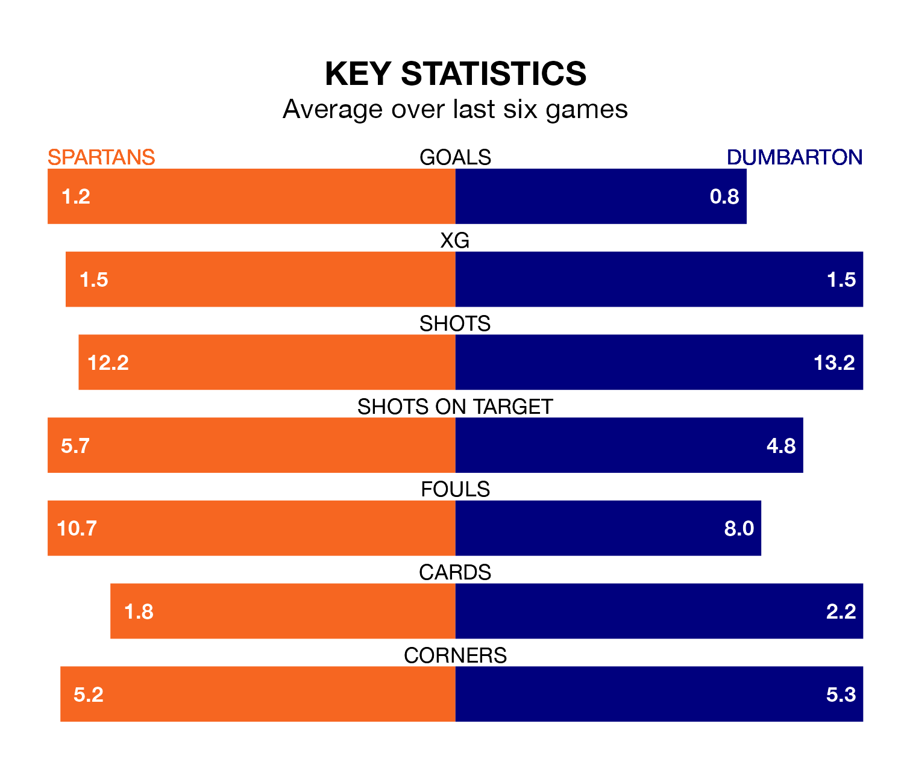

Spartans host Dumbarton in Saturday's match at the Ainslie Park Stadium looking to bounce back from defeat last time out in League Two.
The Spartans, who sit third in the league after 28 games, fell to a 0-0 away defeat to Stenhousemuir on March 9.
They face a Dumbarton side who also lost their last match, a 3-2 defeat to East Fife, and who sit fourth in the table.
In Blair Henderson, Spartans have the league's most on-form striker so far this season. He has notched 15 goals in 28 appearances.
His goal rate of one every 165 minutes is quicker than that of Tony Wallace, Dumbarton's top scorer with a goal every 193 minutes, and a total of nine goals in 28 games.
With 43 goals in 28 games so far this season, the Spartans are the league's third-highest scorers with 1.5 goals per game. And they are conceding fewer than average, letting in 32 goals at a rate of 1.1 per game.
The Sons are also above average scorers, with 1.5 goals per game, compared to a league average of 1.3. They have conceded 1.4 goals per game.
The hosts are in mixed form in League Two, with two wins and three draws from their last six games.
With two wins and a draw over that period, the away team's form is slightly worse – they have taken seven points from 18, compared to Spartans's nine.
In the last three years, Spartans and Dumbarton have played each other on three occasions. Spartans won one of them and they drew the other.
Their last meeting was on February 13, when they played out a 0-0 draw.
Saturday's match will be refereed by Steven Kirkland, who has taken charge of three League Two games so far this season, issuing three red cards and booking 13 players. He has not awarded any penalties.
The last Spartans game Kirkland refereed was a 2-1 away win against Clyde on November 4. He is yet to oversee a match featuring Dumbarton this season.
Updated: 15:10 (UTC), 15/03/24